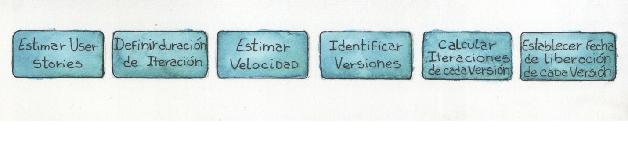
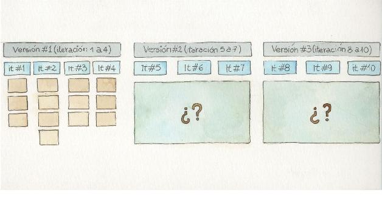
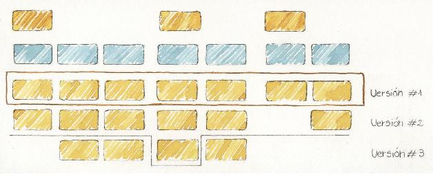
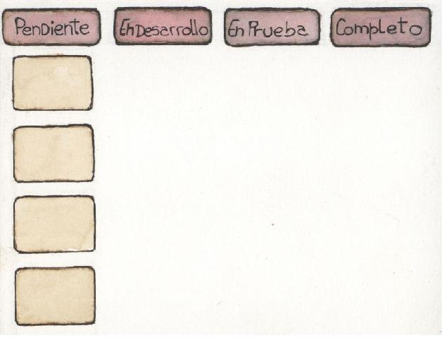

Planificación constante
En los capítulos anteriores vimos técnicas para identificar el alcance del proyecto y para poder estimarlo, en este veremos como, a partir de dicha información, es posible generar un plan ágil. Una de las frases del manifiesto ágil dice “Respuesta al cambio sobre seguir un plan”, lo cual ha creado el mito (erróneo) que al utilizar métodos ágiles no se planifica. Hablando seriamente ¿alguien en su sano juicio cree posible desarrollar un proyecto sin planificar? Al utilizar métodos ágiles se planifica y la planificación es una actividad muy frecuente. Al final de cada iteración se revisa lo realizado y al comienzo de cada iteración se planifica lo que viene. La diferencia del enfoque ágil en lo que respecta a planificación está en el horizonte del plan y en el nivel de detalle que este tiene. Veamos entonces cómo es la cuestión.
De la estimación a la planificación
Para hablar de planificación en el contexto ágil debemos comenzar por el manifiesto, el cual establece prioridades: La respuesta al cambio, por encima del seguimiento de un plan. Esta frase ha sido muchas veces malinterpretada a punto tal que se ha dicho que al trabajar con métodos ágiles no se planifica. El manifiesto apunta a que no tiene sentido hacer un plan al comienzo e intentar seguirlo sin considerar la forma en que se desarrolla el proyecto. Es natural que surjan cambios y es necesario adaptarse a ellos modificando el plan, lo cual nos lleva a una planificación continua. Como se suele decir, lo importante no es el plan sino la planificación. Por eso, es raro, en un contexto ágil, que se invierta mucho esfuerzo en generar diagramas de Gantt, como sí suele ocurrir en otros enfoques tradicionales.
Cuando hablamos de planificación tenemos que distinguir dos niveles: la planificación de alto nivel (conocida como planificación de versiones) y la planificación de iteración.
Pero antes de entrar en detalle sobre cada una es necesario introducir algunos conceptos.
El último momento prudente
Como ya hemos dicho, el trabajar con métodos ágiles implica adaptarse a los cambios. Al mismo tiempo, el costo de adaptación está relacionado al impacto que tengan los cambios en las decisiones tomadas. Una estrategia para minimizar ese costo de cambio es posponer las decisiones hasta el último momento prudente. Esto hace que a la hora de planificar el proyecto y tomar una determinada decisión, identifiquemos cuando es el último momento en que podemos tomarla y evitar así hacerlo prematuramente lo que implicaría un esfuerzo adicional para modificarla. Mientras tanto, reunimos la mayor cantidad de información posible para intentar tomar una mejor decisión.
Si bien esta idea puede resultar novedosa para algunos, la misma tiene varias décadas y fue introducida en el mundo del desarrollo de software por el movimiento de Lean Software Development a comienzos de la década de 2000 [Poppendieck 2003].
Velocidad21
Es la cantidad de trabajo que un determinado equipo es capaz de completar durante una iteración. Algo muy importante que se desprende de esta definición es que la velocidad es una propiedad particular de cada equipo. Si cambian los integrantes del equipo, entonces es otro equipo y por ende es muy probable que la velocidad sea distinta. Esto pone de relieve una vez más el manifiesto: individuos y su interacción, por encima de los procesos y las herramientas.
Otra cuestión que se desprende de la definición es que la misma está sujeta al tamaño de iteración. Por ende, si lo variamos, es de esperar que la velocidad se modifique.
Slack
Supongamos que hemos coordinado con unos amigos para que vengan a comer a nuestra casa el próximo jueves pero aún no hemos definido la hora. Sabemos que ese mismo día tenemos turno en el mecánico a las 20. El cambio de aceite lleva unos 30 minutos y el viaje desde el taller mecánico a nuestra casa otros 30 minutos. Entonces, ¿a qué hora le decimos a nuestros amigos que vengan a casa? En base a lo dicho, estimamos que estaremos en casa a las 21. Pero, ¿les decimos que vengan a esa hora? En general, no, porque sabemos que ante el mínimo imprevisto estaríamos dejando a nuestros amigos esperando en la calle. Si bien estimamos esa hora, nos comprometeremos para las 21:15. Ese es nuestro compromiso.
Luego de leer el ejemplo, seguramente algunos dirán que la diferencia entre estimación y compromiso es el tan conocido “colchón”, de 15 minutos en este caso, que hemos agregado. Y no es del todo incorrecto, pero en términos ágiles lo denominamos slack y la diferencia con el clásico colchón es que el esfuerzo o tiempo asignado al slack se planifica para realizar alguna tarea que no debe formar parte del compromiso asumido con el cliente aunque el equipo se planifica internamente para realizarla. Es muy común al planificar utilizar el slack para pagar deuda técnica22, reordenar el espacio de trabajo o para realizar actividades de investigación.
Planificación de alto nivel
La planificación de alto nivel en ambientes ágiles se denomina Planificación de versiones23. La misma nos da una idea de cuánto nos llevará el proyecto, la cantidad de iteraciones que necesitaremos y cuando estarán disponibles las funcionalidades más importantes. Para realizarla, necesitaremos una estimación de orden de magnitud, la cual realizaremos al comienzo del proyecto. Para esta estimación, su pongamos que utilizamos Planning Poker para estimar cada uno de los ítems y obtenemos un valor final de story points o días ideales dependiendo de la unidad de estimación que hayamos decidido utilizar. Ahora la gran pregunta es: ¿cómo pasamos de cualquiera de estas unidades abstractas a una unidad concreta de tiempo o esfuerzo? Es aquí donde entra en juego la velocidad.
Como ya dijimos, la velocidad nos indicará la cantidad de trabajo que el equipo es capaz de realizar en una iteración, ya sea expresada en story points o días ideales. Entonces, si dividimos el número arrojado por nuestra estimación global del proyecto por la velocidad, sabremos aproximadamente la cantidad de iteraciones necesarias para completar el proyecto estimado. Esto nos lleva a la pregunta ¿cómo conocer la velocidad?
Estimación de la velocidad
Si el equipo ya ha trabajado como tal en otras ocasiones, tendremos una velocidad conocida, problema resuelto. Pero si el equipo es nuevo tendremos que hacer un trabajo adicional para determinarla24. Aquí tenemos varias opciones posibles.
Una es tomar una velocidad basándonos en antecedentes de la organización. Si bien puede sonar una alternativa viable, la realidad es que no suena muy convincente, ya que como mencionamos al definir la velocidad, la misma es particular de cada equipo.
Otra alternativa sería determinar una conversión de story points (o días ideales) a días calendario. Para ello deberíamos tomar una user story, particionarla en tareas y estimar individualmente las tareas en horas. Con esto tendremos una conversión teórica de horas a story points (o días ideales). Si luego calculamos la cantidad de horas disponibles del equipo por iteración, entonces ya seremos capaces de determinar el valor de la velocidad.
Otra técnica para determinar la velocidad inicial es consultar la confianza del equipo. Esto es, una vez estimadas las user stories y determinada la duración de la iteración, el equipo va tomando una a una las user stories en orden de prioridad y se pregunta si podemos comprometernos a completar esta user story en el transcurso de una iteración junto a las otras user stories que ya hemos comprometido. En la medida que el equipo conteste positivamente a esta pregunta, se incrementa el valor de la velocidad acorde a lo que estaba estimada la story. Ejemplo: supongamos que establecemos que cada iteración durará 2 semanas, y el equipo cree que puede comprometerse a completar las primeras 4 user stories del backlog, las cuales suman un total de 16 story points. Entonces la velocidad inicial se establece en 16 story points.
Planificación de versiones
En primer lugar, debemos decir que cuando hablamos de versión nos referimos a una porción de software que agrega valor al cliente, lo cual implica software funcionando en un ambiente productivo. Como ya hemos indicado, el desarrollo ágil es iterativo e incremental, lo cual no es algo novedoso. Lo que sí puede resultar novedoso es que se propone salir a producción de manera frecuente. Por frecuente entendemos intervalos que van de 3 a 6 iteraciones, dependiendo del tamaño de las iteraciones del proyecto [Shore 2007]. El hecho de entregar frecuentemente se debe al énfasis puesto en la entrega de valor. Al mismo tiempo el adelantar la entrega de valor colabora a adelantar el retorno de la inversión, algo siempre bienvenido por los clientes.
Habiendo determinado la velocidad del equipo, podremos entonces determinar la cantidad aproximada de iteraciones que necesitaremos para completar el proyecto. Bastará con dividir la cantidad total de story points resultante de la estimación y dividirla por la velocidad.
El siguiente paso sería determinar la cantidad de versiones y que stories formarán parte de cada versión. Para esto resulta muy útil el Visual Story Mapping, ya que como se muestra en la Figura 5.3, las versiones pueden identificarse a partir de cortes horizontales que agrupen las stories de cada versión. Una vez identificadas las versiones con su correspondiente contenido, es posible establecer fechas de liberación para cada versión.
Es importante destacar que al hacer planificación de versiones identificaremos las distintas versiones tentativas, pero solo entraremos en detalle en la primera de ellas, indicando tentativamente los ítems del backlog de las primeras iteraciones. Hay que notar que a este nivel de planificación, las funcionalidades no se particionan en tareas y tampoco hay una asignación de trabajo a miembros del equipo.
Figura 5.1. Proceso de Planificación.

Figura 5.2. Plan de versiones.

Figura 5.3. Plan de versiones visto desde el VSM.

Priorización de funcionalidades
Para determinar los ítems de backlog a incluir en cada iteración, en primer lugar, tendremos en cuenta el valor de negocio de cada uno de los ítems y luego las dependencias existentes entre ellos. Podríamos decir que hacer esto es básicamente un ejercicio de priorización que debe realizar el responsable de producto con la asistencia del equipo.
Para realizar esta priorización existen diversas técnicas. Una de ellas es el Visual Story Mapping que vimos en el capítulo “Delineando el alcance”, que además de ayudarnos a identificar el alcance del producto, nos permite identificar la prioridad de cada funcionalidad. Asimismo, el VSM nos explicita el conjunto mínimo de funcionalidades necesarias para una primera versión.
Si bien todos los ítems del backlog tienen valor de negocio, cuando los analizamos desde la óptica de la planificación de versiones la cuestión es distinta, pues puede que algunos ítems en solitario no provean valor de mercado. Un ejemplo de esto puede ser la típica funcionalidad de inicio de sesión presente en casi toda aplicación web. Si bien esta funcionalidad seguramente tenga valor para el responsable de producto, la realidad es que aislada difícilmente resulte de valor para un usuario. ¿Qué usuario va a estar interesando en una aplicación que solo le permite iniciar sesión y nada más?
Es por esto que al trabajar en la planificación de versiones se suele hablar de MMFs (por sus siglas en inglés Minimun Marketable Feature). Un MMF es un conjunto mínimo de funcionalidades con valor para el mercado de la aplicación, entendiendo mercado en forma genérica, independientemente de si hablamos de un producto comercial o un desarrollo para usuarios internos a la organización. Entonces en términos de MMFs, cada versión de la aplicación debería incluir al menos un MMF.
En líneas generales, muchos sistemas de información consisten en una cierta cantidad de ABMs25 y reportes asociados. En este contexto he visto casos de planes en los que se plantea completar primero todas las funcionalidades relacionadas a ABMs dejando para el final todos los reportes.
Esto no siempre es lo más apropiado desde un enfoque ágil, pues puede ocurrir que un determinado reporte tenga más valor que la funcionalidad de bajas. Es aquí donde la priorización juega un rol fundamental para lograr un retorno de la inversión más temprano.
N.P.
Planificación de iteración
La planificación de la iteración la realizamos para determinar los ítems que el equipo se comprometerá a trabajar durante la iteración actual. Esta planificación, como es de esperar, se realiza al comienzo de la iteración, en una reunión de la que participa todo el equipo y el responsable del producto. Veamos la dinámica de esta reunión de planificación.
El responsable del producto llega a la reunión con un conjunto de ítems de backlog seleccionados que deberían ser los de mayor valor de negocio. En general, cuentan con una estimación de orden de magnitud que se realizó al comienzo del proyecto, pero podría pasar que se trate de nuevos ítems y que, por lo tanto, no estén estimados.
En ambos casos, el equipo debería estimarlos otra vez, pues sin duda va a haber ganado más conocimiento del negocio, la tecnología y la arquitectura, y podrá realizar una estimación mejor contextualizada. Entonces, el responsable del producto va tomando uno a uno los ítems, que según las prácticas más habituales debieran ser user stories y como tales estar escritas en story cards, y los va leyendo en voz alta. El equipo escucha atentamente y realiza consultas al responsable del producto para entender los detalles de la user story. Durante este intercambio se van identificando condiciones de aceptación, que se van anotando al dorso de la story card y se va particionando el ítem en tareas. Una vez contestadas todas las dudas, el equipo estima cada ítem (con conciencia de todas las tareas involucradas) utilizando la técnica de Planning Poker explicada previamente26. Esta dinámica continúa hasta que la suma de la estimación de los ítems alcanza la velocidad del equipo.
En el desarrollo de esta dinámica puede ocurrir que surjan algunas tareas que no estén directamente relacionadas con una user story particular, por ejemplo configurar un servidor para ejecutar las pruebas de aceptación. Este tipo de tareas también deben ser estimadas y tenidas en cuenta en la planificación.
Es importante destacar que el equipo asumirá un compromiso por user stories completas. Por ejemplo, supongamos que la velocidad del equipo es de 20 story points, que se ha realizado la dinámica descripta y se obtuvo la siguiente estimación:
En base a esto, el equipo debería comprometerse a completar las stories 1, 2, 3, 4, y 5, que suman 18 story points.
¿Qué hacemos entonces con los 2 story points que nos faltan para llegar a 20?
La respuesta es simple: Slack. Esto implica utilizar los story points sobrantes para realizar tareas como, por ejemplo, investigar alguna cuestión técnica, realizar alguna prueba de concepto o pagar deuda técnica.
Es importante que, sea cual sea la tarea elegida, la misma sea concreta; es decir, la misma no debería ser enunciada como “Pagar deuda técnica” sino que debería indicarse concretamente qué deuda técnica se pagará, por ejemplo “Refactorizar el componente de auditoría”.
Es clave que los story points sobrantes sean planificados en tareas concretas para evitar el famoso síndrome del estudiante y evitar una distorsión en la velocidad del equipo.
Al finalizar la iteración, se actualiza el valor de la velocidad considerando los story points correspondientes a las user stories que fueron completadas. En caso que haya habido stories que no hubieran podido completarse, el valor de la velocidad se verá disminuido; por el contrario, si el equipo fue capaz de completar más trabajo del comprometido al comienzo de la iteración, entonces la velocidad se verá incrementada.
Para que la planificación basada en velocidad funcione, es necesario que la duración de las iteraciones sea constante y que las mismas sean time-boxed.
Finalmente, el resultado de la reunión de planificación queda plasmado en un tablero que cuenta con 4 columnas27: pendiente, en desarrollo, en prueba y completo. Cada una de las stories comprometidas estarán pegadas en este tablero junto con sus tareas asociadas. Inicialmente todos los ítems del tablero estarán en la columna pendiente.
Táctica y Estrategia
Una forma interesante de dividir la reunión de planificación es considerar estratégica la primera parte, que trata de user stories y compromisos, incluyendo condiciones de aceptación, y táctica la que trata de las tareas necesarias para lograr implementar esas user stories. En general, los temas tácticos dependen más de una organización interna del equipo de desarrollo, y los estratégicos de su coordinación con el responsable del producto.
Una práctica cada vez más común en los equipos de desarrollo ágil es el uso de reuniones de refinamiento (también llamadas grooming sessions). Estas reuniones se hacen con el objetivo de refinar el backlog de producto de manera tal que el equipo y el responsable de producto lleguen mejor preparados a la reunión de planificación de iteración y que esta pueda ser más corta y efectiva. El refinamiento de backlog puede implicar tareas tales como: escribir nuevas stories, trabajar sobre las stories del backlog para que cumplan con las propiedades INVEST, estimar stories o definir criterios de aceptación de stories que serán parte de la próxima iteración.
Figura 5.4. Tablero de iteración.

En resumen
En el desarrollo ágil lo importante es la planificación y no el plan en sí mismo. Por eso, se planifica al comienzo de cada iteración, adaptando los planes a las necesidades del negocio. La planificación se realiza en base al compromiso que el equipo asume luego de estimar el trabajo a realizar. Tenemos planificación a dos niveles. La de alto nivel (planificación de versiones) tiene un horizonte de un par de iteraciones y solo indica tentativamente los ítems a entregar en cada iteración. La de bajo nivel o de iteración, indica los ítems y sus tareas asociadas solo para la iteración que se está iniciando. Al mismo tiempo, las versiones son de una duración variable en cuanto a cantidad de iteraciones, mientras que las iteraciones tienen una duración de tiempo fija.
21 En inglés se la llama Velocity.
22 Para más información sobre qué es la deuda técnica, consultar el capítulo “Arquitectura y diseño en emergencia”.
23 Planificación de versiones es la traducción que hemos adoptado para el término Release Planning.
24 Esta es una de las razones para mantener equipos formados.
25 La sigla ABM hace referencia a Alta, Baja y Modificación, tres funcionalidades muy comunes en los sistemas de información.
26 Estas tareas de planificación pueden ser realizadas también en reuniones de refinamiento del backlog durante las iteraciones anteriores
27 Si bien aquí hacemos mención a un tablero de 4 columnas, existen diversas variantes, como veremos en el capítulo “Irradiando información”.